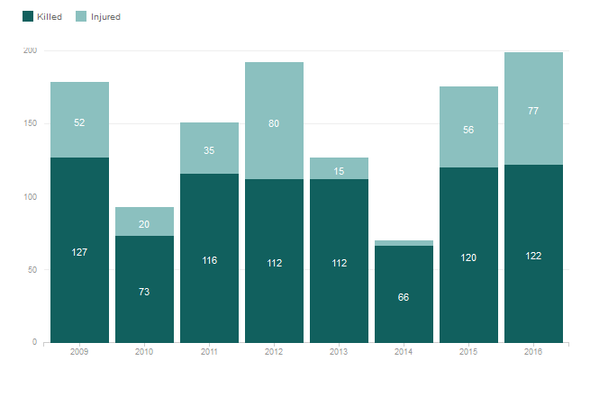

Most Mass Shootings Are Smaller, Domestic Tragedies
Data Visualization using D3.js showcasing the opportunity to explore and dissect mass shootings such as the the definition of mass shootings, location, and the demographic of the shooters.
Story: Most Mass Shootings Are Smaller, Domestic Tragedies
Role:Interactive Designer and Data Developer
Tools:HTML, CSS (LESS), D3.js
Code:Data Analysis
Data: Everytown for Gun Safety Report, Everytown for Gun Safety Appendix